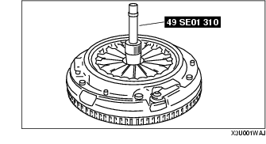
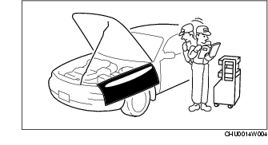
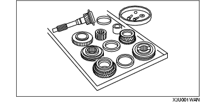
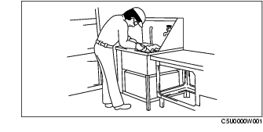
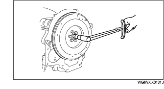
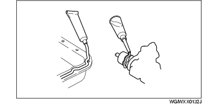
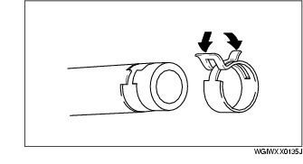
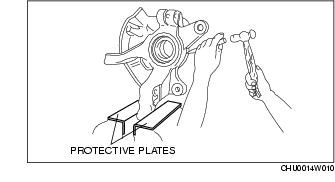

Service cautions
Protection of the Vehicle

Preparation of Tools and Measuring Equipment

Special Service Tools

Disconnection of the Negative Battery Cable
Oil Leakage Inspection
Using UV light (black light)
1. Remove any oil on the engine or transaxle.
- • Referring to the fluorescent dye instruction manual, mix the specified amount of dye into the engine oil or ATF (or transaxle oil).
2. Pour the fluorescent dye into the engine oil or ATF (or transaxle oil).
3. Allow the engine to run for 30 min.
4. Inspect for dye leakage by irradiating with UV light (black light), and identify the type of oil that is leaking.
5. If no dye leakage is found, allow the engine to run for another 30 min. or drive the vehicle then reinspect.
6. Find where the oil is leaking from, then make necessary repairs.
- • To determine whether it is necessary to replace the oil after adding the fluorescent dye, refer to the fluorescent dye instruction manual.
Not using UV light (black light)
1. Gather some of the leaking oil using an absorbent white tissue.
2. Take samples of engine oil and ATF (or transaxle oil), both from the dipstick, and place them next to the leaked oil already gathered on the tissue.
3. Compare the appearance and smell, and identify the type of oil that is leaking.

4. Remove any oil on the engine or transaxle/transmission.
5. Allow the engine to run for 30 min.
6. Check the area where the oil is leaking, then make necessary repairs.
Removal of Parts

Disassembly

Inspection During Removal, Disassembly

Arrangement of Parts

Cleaning of Parts

- • Using compressed air can cause dirt and other particles to fly out causing injury to the eyes. Wear protective eye wear whenever using compressed air.
Reassembly

- - Sealant and gaskets, or both, should be applied to specified locations. When sealant is applied, parts should be installed before sealant hardens to prevent leakage.
- - Oil should be applied to the moving components of parts.
-
- Specified oil or grease should be applied at the prescribed locations (such as oil seals) before reassembly.

Adjustment

Rubber Parts and Tubing

Hose Clamps

Torque Formulas

Vise

Dynamometer
- - Place a fan, preferably a vehicle-speed proportional type, in front of the vehicle.
- - Make sure the vehicle is in a facility with an exhaust gas ventilation system.
- - Since the rear bumper might deform from the heat, cool the rear with a fan. (Surface of the bumper must be 70 degrees or less.)
- - Keep the area around the vehicle uncluttered so that heat does not build up.
- - Watch the water temperature gauge and don't overheat the engine.
- - Avoid added load to the engine and maintain normal driving conditions as much as possible.
- • When only the front wheels are being rotated on the dynamometer, the ABS warning light could illuminate. If the ABS warning light illuminates, turn the ignition switch to the LOCK position, then turn it back to the ON position, run the vehicle at 10 km/h and check that the ABS warning light goes off. (In this case, a DTC will be stored in the memory. To delete this data from the memory, follow the procedure for deleting DTCs (ABS) from memory.) (See GENERAL PROCEDURES (BRAKE).) to turn off the warning light.)
SST
• SST numbers are indicated in two ways, as shown in the following examples.
- - 01-60 section: Both MAZDA and global SST numbers are indicated for reference.
- - Except 01-60 section: Either only the MAZDA SST number or both the MAZDA SST and global SST numbers are shown.
Example (60 section)

Example (except 60 section)